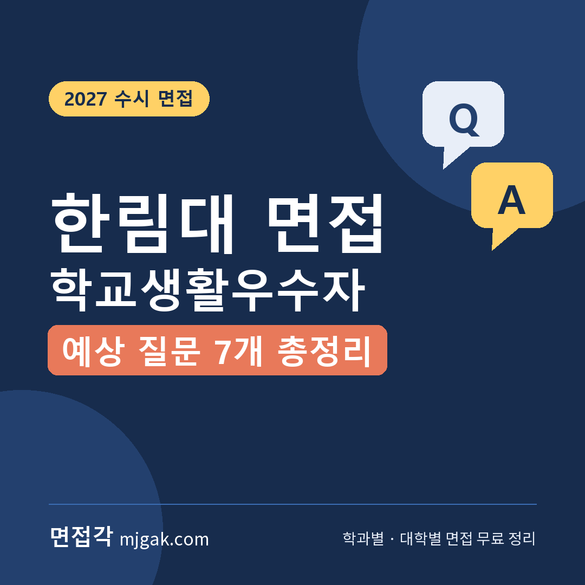
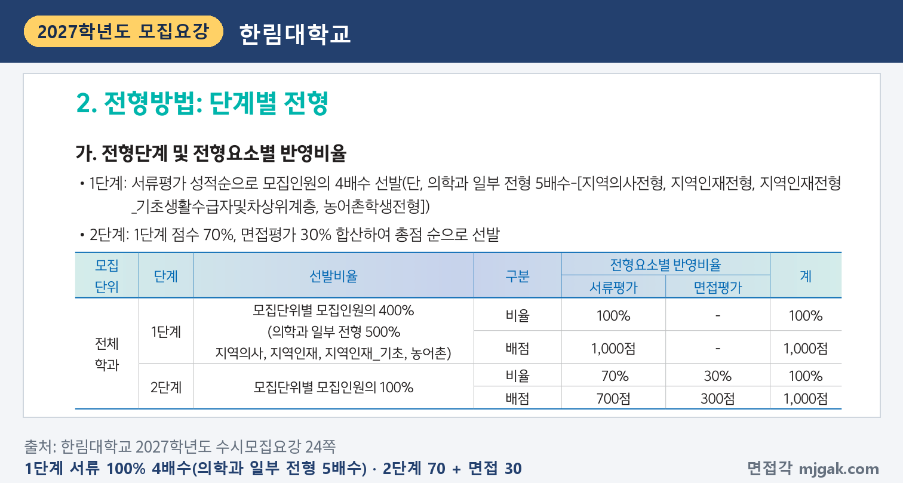
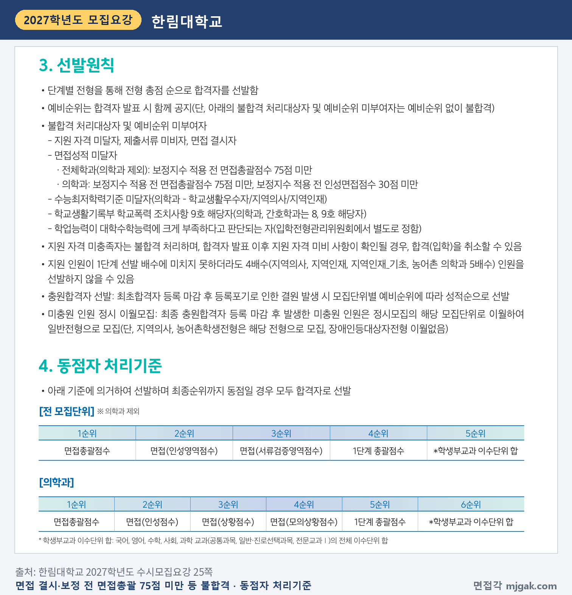
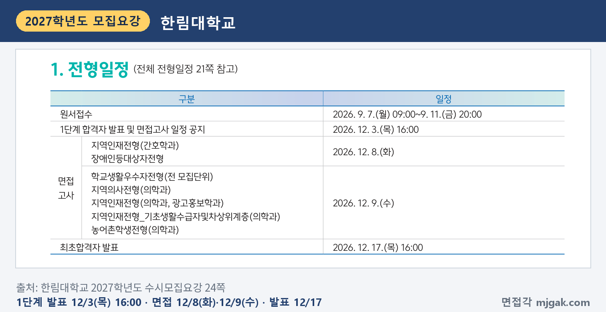
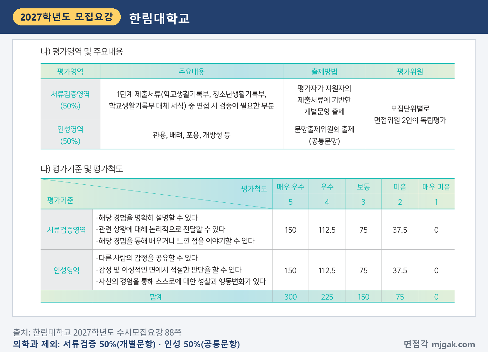
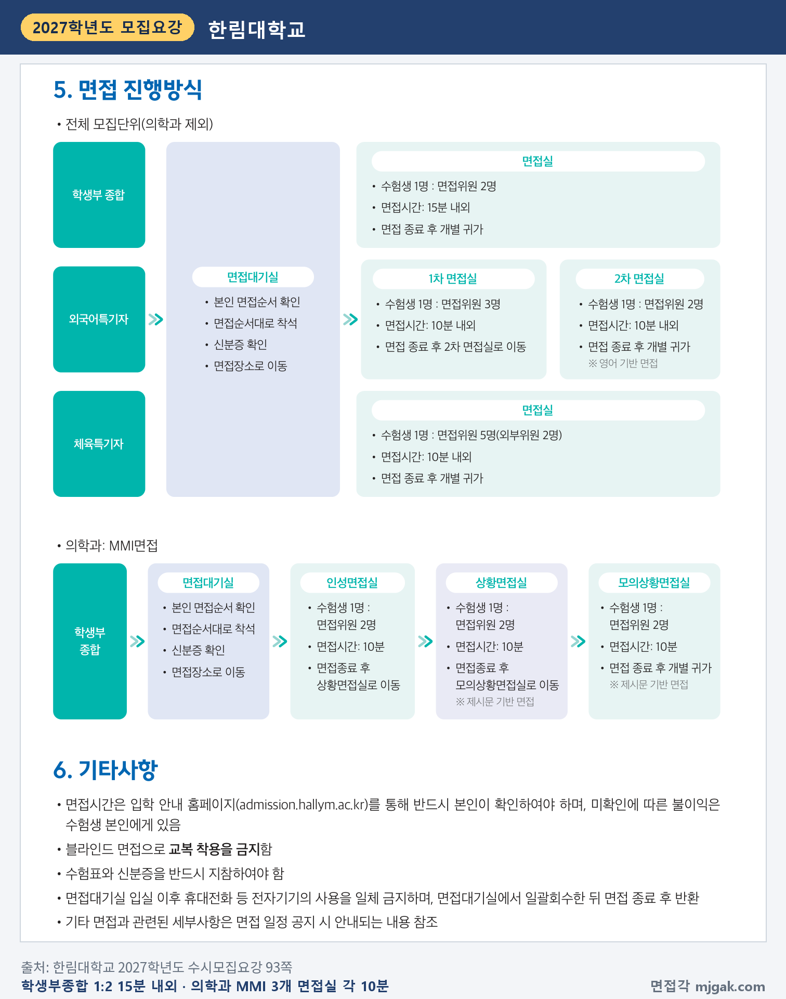
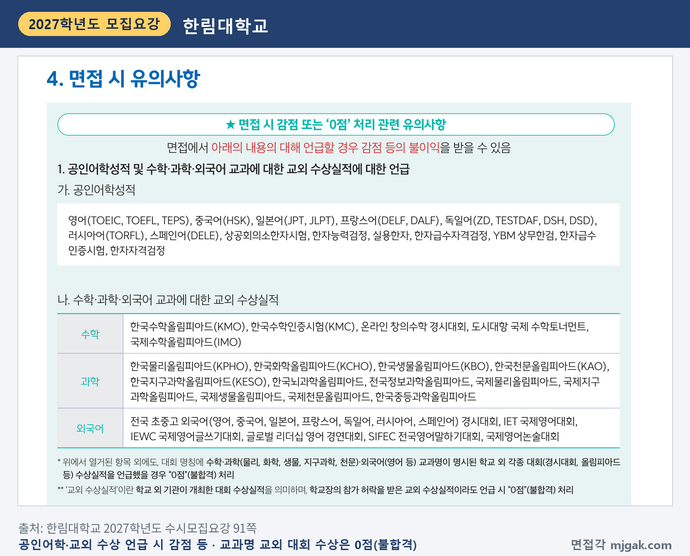
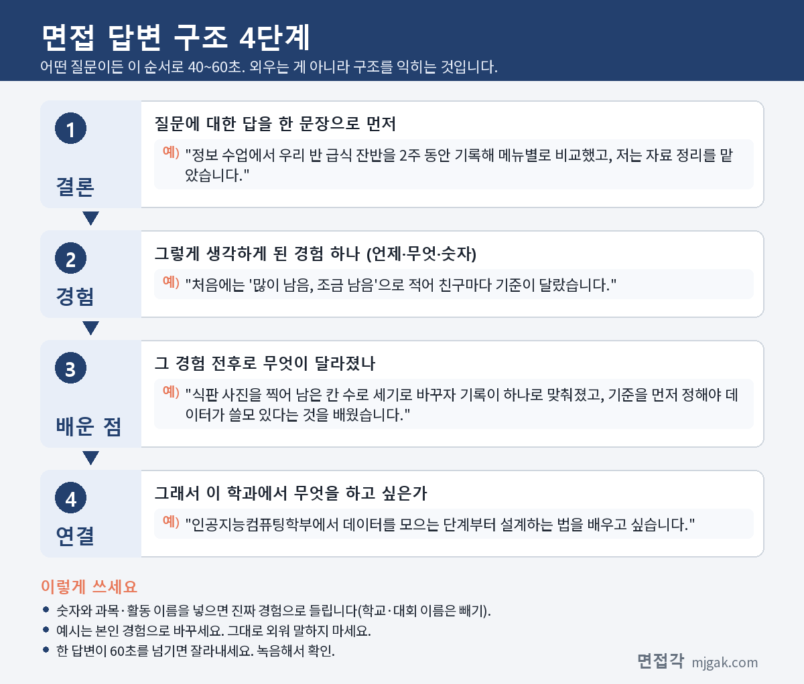
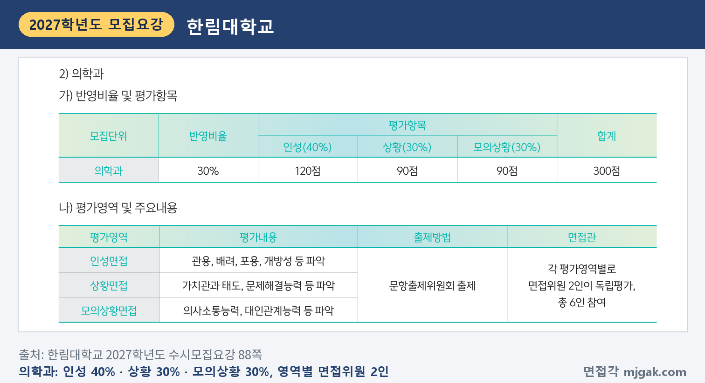

Ctrl+V (서식 유지됨)제목
본문 (이 영역 전체가 복사됩니다)
📷 여기에 이미지 넣기 — 썸네일 — thumb-hallym.png (대표 이미지로 지정)
한림대 학교생활우수자전형에서 먼저 챙길 것은 면접이 수능 뒤라는 점입니다. 1단계 합격자 발표는 12월 3일(목) 16시, 면접은 12월 9일(수)입니다. 수능(11월 19일 목요일)이 끝나고 20일 뒤이고, 1단계 발표에서 면접까지는 6일입니다(이 글에서 계산한 값). 2단계는 1단계 성적 70%와 면접 30%를 합산합니다. 의학과를 뺀 모집단위는 면접위원 2명이 15분 내외로 학생부 확인 질문과 인성 공통문항을 묻고, 의학과는 방 3개를 도는 MMI 면접입니다. 이 글은 한림대학교 2027학년도 수시모집요강을 바탕으로 전형 방법, 일정, 면접 방식, 예상 질문 7개, 수능 전후 준비 순서를 정리하고, 지역인재전형·지역의사전형은 다른 점만 따로 묶었습니다. 이 전형에 지원한 고3과 재수생이 읽으시면 됩니다.
1. 학교생활우수자전형, 2027학년도에는 어떻게 보나
학교생활우수자전형은 학생부종합전형으로 557명을 뽑습니다(26쪽). 인공지능컴퓨팅학부 70명, 경영대학 48명, 자유전공학부 35명, 의학과 31명, 간호학과 30명, 사회복지학부 28명, 미디어스쿨 26명, 인문학부 25명, 광고홍보학과 20명 순으로 많고, 글로벌학부는 이 전형으로 뽑지 않습니다(19쪽). 지원 자격은 국내외 정규 고등학교 졸업(예정)자 또는 같은 학력이 있다고 인정된 자이고, 검정고시·국외고 출신도 지원할 수 있습니다(26쪽).
1단계는 서류평가 100%(1,000점)로 모집인원의 4배수를 뽑고, 2단계는 1단계 점수 70%(700점)와 면접평가 30%(300점)를 합산합니다(24쪽). 의학과도 이 전형에서는 4배수이고, 2026학년도 5배수에서 바뀌었습니다(17쪽). 이 글에서 계산하면 1단계 합격 규모는 전체 2,228명, 인공지능컴퓨팅학부 280명, 경영대학 192명, 의학과 124명입니다. 수능 최저는 의학과만 국어·영어·수학·과학탐구(2과목 평균) 중 3개 합 4등급 이내(영어를 넣으면 영어 1등급), 수학 미적분 또는 기하, 탐구 과학입니다(26쪽).
📷 여기에 이미지 넣기 — 캡처 1 — 한림대학교 2027학년도 수시모집요강 24쪽: hallym-2027-method.png
면접 결시자, 보정지수 적용 전 면접총괄점수 75점 미만인 사람은 예비순위 없이 불합격입니다. 의학과는 보정지수 적용 전 인성면접점수 30점 미만도 불합격입니다(25쪽). 학교폭력 조치사항은 9호(의학과·간호학과는 8·9호)면 불합격이고, 일반학과는 4~8호, 의학과·간호학과는 1~7호를 1단계 총점에서 감점합니다(25·90쪽). 동점자는 의학과를 빼면 면접총괄점수, 인성영역, 서류검증영역, 1단계 총괄점수, 학생부교과 이수단위 합 순으로 가립니다(25쪽).
📷 여기에 이미지 넣기 — 캡처 2 — 한림대학교 2027학년도 수시모집요강 25쪽: hallym-2027-rules.png
서류평가는 입학사정관 2인이 학생부로 독립평가하고, 학업역량 40%, 진로역량 40%, 공동체역량 20%입니다(83쪽). 전형료는 74,500원(의학과 89,500원)이고, 1단계 불합격자에게 20,000원(의학과 25,000원)을 돌려줍니다. 면접 일정이 공지된 뒤 다른 대학 일정과 겹치거나 단순 변심 등으로 응시하지 않으면 돌려받지 못합니다(98·99쪽).
2. 언제 보나: 12월 3일 발표, 12월 9일 면접
일정은 날짜순으로 이렇습니다(21·24쪽).
- 11월 19일(목): 수능
- 12월 3일(목) 16:00: 1단계 합격자 발표와 면접일정 공지
- 12월 9일(수): 학교생활우수자 면접(전 모집단위)
- 12월 17일(목) 16:00: 최초합격자 발표
- 12월 21일(월) 09:00 ~ 23일(수) 20:00: 온라인 문서등록
발표는 개별로 알려 주지 않으니 입학 안내 홈페이지(admission.hallym.ac.kr)에서 직접 확인해야 합니다(22쪽). 면접시간과 순서는 전산으로 무작위 배정하고, 면접그룹은 일정 공지 때, 그룹 안 개별 순서는 면접 당일 대기실에서 공개합니다. 공지된 시간과 순서는 어떤 경우에도 바꿀 수 없습니다(91쪽).
📷 여기에 이미지 넣기 — 캡처 3 — 한림대학교 2027학년도 수시모집요강 24쪽: hallym-2027-schedule.png
3. 면접은 어떻게 보나: 서류검증 50%, 인성 50%
의학과를 뺀 모집단위는 수험생 1명과 면접위원 2명이 15분 내외로 면접합니다(93쪽). 평가영역은 둘입니다(88쪽).
- 서류검증영역 50%(150점): 제출서류 중 면접에서 검증이 필요한 부분. 평가자가 지원자의 서류로 개별문항을 냅니다. 기준은 "해당 경험을 명확히 설명", "관련 상황에 대해 논리적으로 전달", "배우거나 느낀 점을 이야기"입니다.
- 인성영역 50%(150점): 관용, 배려, 포용, 개방성 등. 문항출제위원회가 낸 공통문항입니다. 기준은 "다른 사람의 감정을 공유", "감정 및 이성적인 면에서 적절한 판단", "스스로에 대한 성찰과 행동변화"입니다.
모집단위별 면접위원 2인이 5단계(매우 우수~매우 미흡)로 독립평가하고 평균을 씁니다. 2팀 이상으로 면접하는 모집단위는 보정지수를 적용합니다(88쪽).
📷 여기에 이미지 넣기 — 캡처 4 — 한림대학교 2027학년도 수시모집요강 88쪽: hallym-2027-interview.png
📷 여기에 이미지 넣기 — 캡처 5 — 한림대학교 2027학년도 수시모집요강 93쪽: hallym-2027-format.png
말하면 안 되는 것도 정해져 있습니다. 공인어학성적과 수학·과학·외국어 교과의 교외 수상실적을 말하면 감점 등 불이익을 받을 수 있고, 대회 이름에 이 교과명이 들어간 교외 대회 수상실적은 학교장 허락을 받은 대회라도 "0점"(불합격)입니다. 학생부 기재금지 항목, 자율동아리·개인봉사·수상경력·독서활동처럼 대입에 반영하지 않는 항목, 어학연수 같은 교외 활동, 이름·출신고교·부모의 직업 등을 암시하는 말도 감점 등 불이익을 받을 수 있습니다(91·92쪽). 블라인드 면접이라 교복은 입을 수 없고, 휴대전화는 대기실에서 걷어 면접 뒤 돌려줍니다(93쪽).
📷 여기에 이미지 넣기 — 캡처 6 — 한림대학교 2027학년도 수시모집요강 91쪽: hallym-2027-caution.png
4. 예상 질문 7개와 답변법
아래 7개는 대학이 공개한 질문이 아니라, 88쪽 평가영역과 기준으로 만든 예상 질문입니다. 질문 1~3은 서류검증영역, 4~7은 인성영역입니다. 예시 답변은 모집단위를 바꿔 쓴 가상의 예시이니 본인 학생부로 바꾸세요.
▶ 질문 1. 학생부에 적힌 탐구 활동에서 직접 맡은 일을 설명해 보세요. (서류검증: 경험을 명확히 설명)
왜 묻나: 서류검증영역의 첫 기준이 "해당 경험을 명확히 설명할 수 있다"입니다.
답변 구조: 활동과 내 역할 한 문장 → 막힌 점 → 바꾼 방법과 배운 점 → 전공 연결.
답변 예시 (인공지능컴퓨팅학부):
"정보 수업에서 우리 반 급식 잔반을 2주 동안 기록해 메뉴별로 비교했고, 저는 자료 정리를 맡았습니다. 처음에는 '많이 남음, 조금 남음'으로 적어 친구마다 기준이 달랐습니다. 식판 사진을 찍어 남은 칸 수로 세기로 바꾸자 기록이 하나로 맞춰졌고, 기준을 먼저 정해야 데이터가 쓸모 있다는 것을 배웠습니다. 인공지능컴퓨팅학부에서 데이터를 모으는 단계부터 설계하는 법을 배우고 싶습니다."
주의: 학생부 문장을 외워 읽지 말고, 내가 한 일을 순서대로 말하세요.
▶ 질문 2. 그 활동이 계획대로 되지 않았을 때 무엇을 근거로 방법을 바꿨나요? (서류검증: 상황을 논리적으로 전달)
왜 묻나: 두 번째 기준이 "관련 상황에 대해 논리적으로 전달할 수 있다"입니다. 판단의 근거를 묻는 꼬리 질문으로 예상할 수 있습니다.
답변 구조: 계획 → 안 된 이유(근거) → 바꾼 방법 → 결과.
답변 예시 (경영대학):
"체육대회 반 티셔츠 디자인을 하루 투표로 정하려 했는데, 참여한 친구가 절반뿐이었습니다. 그대로 정하면 나머지 절반이 불만을 가질 것 같았습니다. 마감을 이틀 늘리고 후보를 두 개로 줄여 가격과 함께 다시 물었더니 거의 모두 참여했습니다. 경영학을 공부하며 여러 사람의 선택을 모으는 방법을 더 배우고 싶습니다."
주의: "열심히 했습니다" 대신 무엇을 보고 판단했는지를 말하세요.
▶ 질문 3. 그 경험으로 배운 점은 지원 전공과 어떻게 이어지나요? (서류검증: 배우거나 느낀 점)
왜 묻나: 세 번째 기준이 "해당 경험을 통해 배우거나 느낀 점을 이야기할 수 있다"입니다.
답변 구조: 배운 점 한 문장 → 그 순간의 장면 → 그 뒤 달라진 행동 → 전공 연결.
답변 예시 (간호학과):
"숫자 뒤에 사람의 상태가 있다는 것을 배웠습니다. 생명과학 모둠 실험에서 운동 전후 맥박을 쟀는데, 긴장한 친구의 첫 값이 유난히 높았습니다. 2분 쉬게 한 뒤 다시 재니 값이 안정됐고, 그 뒤로는 측정 전에 상대 상태부터 묻습니다. 간호학과에서 환자를 먼저 살피고 측정하는 습관을 기르고 싶습니다."
주의: 배운 점을 "소중함을 깨달았다"로 끝내지 말고, 바뀐 행동으로 보여 주세요.
📷 여기에 이미지 넣기 — 이미지 1 — 제미나이 생성: 창밖으로 호수와 낮은 산이 보이는 겨울 캠퍼스 라운지에서 노트북·청진기·마이크·계산기·보드게임 말 옆에 청색·청록색 소품을 두고 답하는 남학생(실사) / "제미나이 프롬프트 1"
(AI로 만든 이미지로, 실제 캠퍼스와 다를 수 있습니다)
▶ 질문 4. 다른 사람의 마음을 먼저 헤아려 행동을 바꾼 경험이 있나요? (인성: 다른 사람의 감정을 공유)
왜 묻나: 인성영역 기준 첫째가 "다른 사람의 감정을 공유할 수 있다"이고, 평가 내용에 배려가 있습니다.
답변 구조: 상황 → 상대의 사정을 알게 된 과정 → 내가 바꾼 행동 → 결과.
답변 예시 (사회복지학부):
"모둠 발표 준비에서 한 친구가 맡은 부분을 계속 미뤄 다른 친구들이 화가 났습니다. 따로 이유를 물어보니 저녁마다 동생을 돌봐야 해서 시간이 없었습니다. 그 친구에게 쉬는 시간에 할 수 있는 자료 찾기를 맡기고 모둠에는 사정을 짧게 전했더니 갈등이 줄었습니다. 사회복지학부에서 사람의 사정을 먼저 듣는 방법을 배우고 싶습니다."
주의: 친구를 탓하는 말은 빼고, 내가 한 행동에 시간을 쓰세요.
▶ 질문 5. 나와 다른 의견을 듣고 생각을 바꾼 적이 있나요? (인성: 개방성, 감정 및 이성적 판단)
왜 묻나: 평가 내용의 "개방성"과 기준 "감정 및 이성적인 면에서 적절한 판단"을 함께 볼 수 있는 질문입니다.
답변 구조: 갈린 의견 → 확인한 방법 → 바꾼 결론 → 배운 점.
답변 예시 (미디어스쿨):
"학급 영상 제작에서 저는 자막을 많이 넣자고 했고, 한 친구는 화면으로만 보여 주자고 했습니다. 두 버전을 짧게 만들어 반 친구 열 명에게 보여 주니 자막이 적은 쪽이 더 집중된다는 답이 많아, 핵심 문장 세 개만 남겼습니다. 제 생각도 확인해 보고 바꿀 수 있다는 것을 배웠습니다. 보는 사람의 반응을 근거로 콘텐츠를 만들고 싶습니다."
주의: "제가 맞았습니다"로 끝내지 말고, 상대 의견에서 가져온 것을 말하세요.
▶ 질문 6. 온라인에서 다른 의견에 거친 말이 오가는 것을 어떻게 생각하나요? (인성: 관용·포용)
왜 묻나: 인성영역은 문항출제위원회가 낸 공통문항이고(88쪽), 2026학년도 보고서에는 사회 현상에 대한 생각을 주문제와 단계별 질문으로 묻는 문항이 있었습니다(아래 자주 묻는 것들 참고). 관용과 포용을 내 의견으로 말해 보는 연습입니다.
답변 구조: 내 입장 한 문장 → 이유 → 내 경험 → 할 수 있는 일.
답변 예시 (심리학과):
"다른 의견이 나오는 것은 건강하지만, 사람을 공격하는 말은 의견을 듣지 못하게 만든다고 생각합니다. 통합사회 토론 수업에서 상대 주장을 한 문장으로 정리한 뒤 반박하는 규칙을 썼더니, 언성이 높아지던 토론이 차분해졌습니다. 댓글을 쓰기 전에 상대 말을 한 번 정리해 보는 습관이 도움이 된다고 봅니다. 사람들이 온라인에서 더 공격적이 되는 이유를 심리학으로 배우고 싶습니다."
주의: 정답을 찾기보다 내 판단 기준을 분명히 말하세요.
▶ 질문 7. 자신의 단점을 돌아보고 행동을 바꾼 경험을 말해 보세요. (인성: 성찰과 행동변화)
왜 묻나: 기준 셋째가 "자신의 경험을 통해 스스로에 대한 성찰과 행동변화가 있다"입니다.
답변 구조: 단점 인정 → 드러난 장면 → 바꾼 습관 → 그 뒤 결과.
답변 예시 (자유전공학부):
"제 단점은 혼자 끝내려는 습관이었습니다. 2학년 탐구 보고서를 혼자 붙잡다가 마감 전날에야 자료가 틀린 것을 알았습니다. 그 뒤로는 중간 점검일을 정해 선생님과 친구에게 먼저 보여 줬고, 3학년 보고서는 일주일 일찍 고칠 점을 찾았습니다. 자유전공학부에서 전공을 탐색할 때도 일찍 묻고 고치겠습니다."
주의: 장점을 단점처럼 포장하지 마세요. 실제로 바꾼 행동이 있어야 합니다.
5. 답변은 이 4단계로 만드세요
어떤 질문이든 결론 → 경험 → 배운 점 → 연결 순서로 40~60초 안에 말하세요. 아래 도식은 질문 1을 4단계로 쪼갠 것입니다.
📷 여기에 이미지 넣기 — 도식 — structure-hallym.png
6. 의학과는 MMI: 방 3개, 각 10분
의학과는 인성면접실 → 상황면접실 → 모의상황면접실을 차례로 돕니다. 방마다 수험생 1명과 면접위원 2명, 10분이고, 상황·모의상황은 제시문 기반 면접입니다(93쪽). 배점은 인성 40%(120점), 상황 30%(90점), 모의상황 30%(90점)입니다. 상황면접은 가치관과 태도·문제해결능력, 모의상황면접은 의사소통능력·대인관계능력을 파악하며, 평가기준은 상황이 "문제의 본질", "다양한 관점", "판단기준을 논리적으로 표현", 모의상황이 "공감능력", "효과적인 의사전달방식", "사고의 유연성"입니다(88·89쪽). 제시문을 받으면 상황 요약 → 관련된 사람 각각의 입장 → 내 판단 기준 → 행동 순서로 답해 보세요.
📷 여기에 이미지 넣기 — 캡처 7 — 한림대학교 2027학년도 수시모집요강 88쪽: hallym-2027-mmi.png
7. 지역인재·지역의사전형은 이것이 다르다
지역인재전형은 42명(간호학과 20명, 의학과 18명, 광고홍보학과 4명)이고, 강원 지역 고교에서 입학부터 졸업까지 마친 사람이 지원합니다. 의학과·간호학과 지원자 중 2022년 이후 중학교 입학자는 비수도권 중학교와 강원 고교를 마치고 그 지역에 거주해야 합니다(19·30쪽). 1단계는 의학과 5배수, 간호학과·광고홍보학과 4배수입니다(24쪽). 수능 최저는 의학과만 3개 합 5등급 이내(영어를 넣으면 1등급)입니다(30쪽). 면접은 간호학과가 12월 8일(화), 의학과·광고홍보학과가 12월 9일(수)입니다(21쪽).
지역의사전형은 2027학년도에 새로 생겼고 의학과 7명을 강원광역권·춘천권·원주권 등 7개 권역에서 1명씩 뽑습니다. 강원 지역 중학교와 해당 권역 고교를 마치고 그 기간 거주해야 하며, 의사면허 취득 뒤 강원 지역에서 10년 의무복무합니다(28·29쪽). 수능 최저는 3개 합 5등급 이내(영어를 넣으면 2등급 이내), 1단계 5배수, 면접 12월 9일(수) MMI입니다(24·28쪽). 지역인재(의학과)나 지역인재_기초생활수급자및차상위계층(의학과)에 중복지원한 사람은 면접을 한 번만 보고 전형별로 점수를 반영합니다(91·94쪽).
8. 수능 전후로 나눈 준비 순서
10월 28일(수) ~ 11월 18일(수), 수능 전: 수능 공부가 먼저입니다. 의학과는 수능 최저가 있습니다. 주말에 학생부에서 활동 4~5개를 골라 "무엇을 했나, 왜 그렇게 판단했나, 무엇을 배웠나"를 세 줄씩만 적어 둡니다. 공인어학성적, 교외 대회, 이름·학교 이름이 나오는 표현은 지웁니다.
11월 19일(목): 수능.
11월 20일(금) ~ 12월 2일(수), 1단계 발표 전: 질문 1~7 초안을 만들고 60초 안에 녹음합니다. 답마다 "왜요?"를 두 번 더 묻고 이어 말해 봅니다. 의학과는 상황·모의상황 연습을 더합니다.
12월 3일(목) 16시, 1단계 발표: 입학 안내 홈페이지에서 합격 여부와 내 면접그룹을 확인합니다(22·91쪽).
12월 4일(금) ~ 8일(화): 15분(의학과는 10분씩 3회)을 재며 모의 면접을 두 번 합니다. 새 답변은 만들지 않습니다.
12월 9일(수), 면접: 수험표와 신분증을 챙기고 교복은 입지 않습니다(91·93쪽).
12월 17일(목) 16시: 최초합격자 발표. 12월 21일(월)~23일(수) 온라인 문서등록을 놓치지 마세요(22쪽).
9. 한림대 면접 자주 묻는 것들
Q. 면접 날짜나 시간을 바꿀 수 있나요?
A. 안 됩니다. 면접시간과 순서는 무작위로 배정하고, 어떤 경우에도 조정하거나 바꿀 수 없습니다(91쪽).
Q. 공개된 기출문제가 있나요?
A. 모집요강 93쪽은 면접 기출문제로 「입학 안내 홈페이지(admission.hallym.ac.kr) > 수시 > 기출문제」의 2026학년도 한림대학교 선행학습 영향평가 결과보고서(수시 면접 기출문제 포함)를 안내합니다. 이 보고서에는 2026학년도 일반학과 인성영역 6문항이 주문제와 단계별 질문 형태로 실려 있고, 사회 현상에 대한 생각과 본인 경험을 묻는 주제였습니다(보고서 24~29쪽). 2027학년도에도 인성 기반 면접을 유지할 계획이라고 적었습니다(보고서 18쪽). 같은 질문이 나온다는 뜻은 아닙니다.
Q. 제시문을 읽고 푸는 문제가 나오나요?
A. 의학과를 뺀 모집단위는 서류검증 개별문항과 인성 공통문항입니다(88쪽). 제시문 기반 면접은 의학과의 상황·모의상황면접입니다(93쪽). 다만 2026학년도 보고서를 보면 일반 모집단위 인성 공통문항 가운데 일부에도 짧은 상황 설명이 붙어 있었습니다.
Q. 면접 복장 규정이 있나요?
A. 블라인드 면접이라 교복은 입을 수 없습니다(93쪽). 그 밖의 복장 기준은 모집요강에 없습니다.
Q. 수능 최저가 있나요?
A. 의학과만 있습니다. 나머지 모집단위는 없습니다(26쪽).
10. 면접 전날 체크리스트
□ 질문 1~7을 각각 60초 안에 말할 수 있다
□ 학생부 활동마다 "판단 근거"와 "배운 점"을 한 줄씩 적어 두었다
□ 공인어학성적·교외 대회 이름이 답에 나오지 않는다
□ 녹음으로 이름·학교 이름·부모 직업이 나오지 않는지 확인했다
□ 입학 안내 홈페이지에서 내 면접그룹과 시간을 확인했다
□ 수험표와 신분증을 챙겼고, 교복은 입지 않는다
□ 휴대전화는 대기실에서 걷는다는 것을 안다
11. 같은 시기에 면접 보는 대학
한림대 면접일(12월 9일 수요일)과 가까운 주에 면접을 보는 대학입니다.
▷ 경희대 네오르네상스 면접 총정리 (12월 5일·6일)
▷ 건국대 KU자기추천 면접 총정리 (12월 5일·6일)
▷ 동국대 Do Dream전형 면접 총정리 (12월 11~13일)
12. 함께 보면 좋은 글
▷ AI·데이터사이언스학과 면접 질문 6가지와 답변 예시 총정리
한림대 면접은 외운 답을 들려주는 자리가 아닙니다. 15분 동안 내 학생부의 경험과 내 생각을 내 말로 설명하는 자리입니다.
※ 이 글의 전형 내용은 한림대학교 2027학년도 수시모집요강에서, 기출 형식과 2027학년도 계획은 한림대학교가 낸 2026학년도 선행학습 영향평가 결과보고서에서 인용했습니다. 괄호 안 쪽수는 각 문서에 인쇄된 쪽수입니다. 예상 질문 7개는 모집요강의 평가영역과 기준을 바탕으로 정리한 것이며 대학이 공개한 질문이 아닙니다. 면접그룹과 시간은 한림대 입학 안내 홈페이지 공지를 꼭 확인하세요.
한림대를 포함한 76개 대학의 2027학년도 면접 정보와 71개 학과별 면접 질문·답변 예시, 대학이 공개한 실제 면접 기출을 무료로 정리한 사이트입니다. 회원가입 없이 바로 볼 수 있고, 질문을 무작위로 뽑아 60초 타이머로 연습하는 모의 면접도 있습니다.
태그 (#은 에디터가 자동으로 붙이므로 그대로 붙여 넣어도 됩니다)
넣을 이미지 목록 (docs/promo/img 폴더)









제미나이 프롬프트 1 — 창밖으로 호수와 낮은 산이 보이는 겨울 캠퍼스 라운지에서 노트북·청진기·마이크·계산기·보드게임 말 옆에 청색·청록색 소품을 두고 답하는 남학생(실사) (4:3) — 제미나이에 그대로 붙여 넣어 이미지를 만드세요